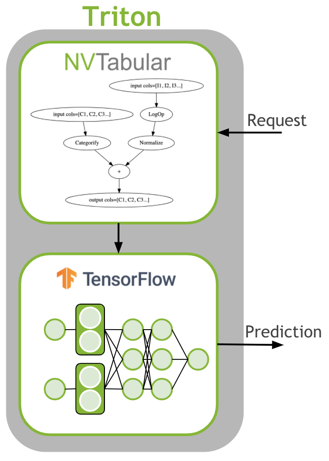

# Copyright 2020 NVIDIA Corporation. All Rights Reserved.
#
# Licensed under the Apache License, Version 2.0 (the "License");
# you may not use this file except in compliance with the License.
# You may obtain a copy of the License at
#
# http://www.apache.org/licenses/LICENSE-2.0
#
# Unless required by applicable law or agreed to in writing, software
# distributed under the License is distributed on an "AS IS" BASIS,
# WITHOUT WARRANTIES OR CONDITIONS OF ANY KIND, either express or implied.
# See the License for the specific language governing permissions and
# limitations under the License.
# ==============================================================================
Serve Recommendations from the TensorFlow Model#
This notebook is created using the latest stable merlin-tensorflow container.
The last step is to deploy the ETL workflow and saved model to production. In the production setting, we want to transform the input data as done during training ETL. We need to apply the same mean/std for continuous features and use the same categorical mapping to convert the categories to continuous integers before we use the deep learning model for a prediction. Therefore, we deploy the NVTabular workflow with the TensorFlow model as an ensemble model to Triton Inference. The ensemble model guarantees that the same transformation are applied to the raw inputs.
{kind=link}
Learning Objectives#
In the previous notebook we explained and showed how we can preprocess data with multi-hot columns with NVTabular, and train an TF MLP model using NVTabular KerasSequenceLoader. We learned how to save a workflow, a trained TF model, and the ensemble model. In this notebook, we will show an example request script sent to the Triton Inference Server. We will learn
to transform new/streaming data with NVTabular library
to deploy the end-to-end pipeline to generate prediction results for new data from trained TF model
Launching and Starting the Triton Server#
Before we get started, you should start the container for Triton Inference Server with the following command. This command includes the -v argument that mounts your local model-repository folder with your saved models from the previous notebook (03a-Training-with-TF.ipynb) to the /model directory in the container.
docker run -it --gpus device=0 -p 8000:8000 -p 8001:8001 -p 8002:8002 -v ${PWD}:/model/ nvcr.io/nvidia/merlin/merlin-tensorflow:latest
After you started the container, you can start Triton Inference Server with the following command.
You need to provide correct path for the models directory.
tritonserver --model-repository=path_to_models --backend-config=tensorflow,version=2 --model-control-mode=explicit
Note: The model-repository path is /model/nvt-examples/models/. The models haven’t been loaded, yet. Below, we will request the Triton server to load the saved ensemble model.
# External dependencies
import os
from time import time
# Get dataframe library - cudf or pandas
from merlin.core.dispatch import get_lib
df_lib = get_lib()
import tritonclient.grpc as grpcclient
import nvtabular.inference.triton as nvt_triton
We define our base directory, containing the data.
# path to preprocessed data
INPUT_DATA_DIR = os.environ.get(
"INPUT_DATA_DIR", os.path.expanduser("~/nvt-examples/movielens/data/")
)
Let’s deactivate the warnings before sending requests.
import warnings
warnings.filterwarnings("ignore")
Loading Ensemble Model with Triton Inference Serve#
At this stage, you should have launched the Triton Inference Server docker container with the instructions above.
Let’s connect to the Triton Inference Server. Use Triton’s ready endpoint to verify that the server and the models are ready for inference. Replace localhost with your host ip address.
import tritonhttpclient
try:
triton_client = tritonhttpclient.InferenceServerClient(url="localhost:8000", verbose=True)
print("client created.")
except Exception as e:
print("channel creation failed: " + str(e))
client created.
/usr/local/lib/python3.8/dist-packages/tritonhttpclient/__init__.py:30: DeprecationWarning: The package `tritonhttpclient` is deprecated and will be removed in a future version. Please use instead `tritonclient.http`
warnings.warn(
import warnings
warnings.filterwarnings("ignore")
/usr/local/lib/python3.8/dist-packages/ipykernel/ipkernel.py:283: DeprecationWarning: `should_run_async` will not call `transform_cell` automatically in the future. Please pass the result to `transformed_cell` argument and any exception that happen during thetransform in `preprocessing_exc_tuple` in IPython 7.17 and above.
and should_run_async(code)
We check if the server is alive.
triton_client.is_server_live()
GET /v2/health/live, headers None
<HTTPSocketPoolResponse status=200 headers={'content-length': '0', 'content-type': 'text/plain'}>
True
The HTTP request returns status 200 if Triton is ready and non-200 if it is not ready.
We check the available models in the repositories:
movielens: Ensemble
movielens_nvt: NVTabular
movielens_tf: TensorFlow model
triton_client.get_model_repository_index()
POST /v2/repository/index, headers None
<HTTPSocketPoolResponse status=200 headers={'content-type': 'application/json', 'content-length': '71'}>
bytearray(b'[{"name":"movielens"},{"name":"movielens_nvt"},{"name":"movielens_tf"}]')
[{'name': 'movielens'}, {'name': 'movielens_nvt'}, {'name': 'movielens_tf'}]
We load the ensemble model.
%%time
triton_client.load_model(model_name="movielens")
POST /v2/repository/models/movielens/load, headers None
<HTTPSocketPoolResponse status=200 headers={'content-type': 'application/json', 'content-length': '0'}>
Loaded model 'movielens'
CPU times: user 2.05 ms, sys: 1.62 ms, total: 3.66 ms
Wall time: 9.09 s
Send a Request to Triton Inference Server to Transform a Raw Dataset#
A minimal model repository for a TensorFlow SavedModel model is:
<model-repository-path>/<model-name>/
config.pbtxt
1/
model.savedmodel/
<saved-model files>
Let’s check out our model repository layout. You can install tree library with apt-get install tree, and then run !tree /model/models/ to print out the model repository layout as below:
/model/models/
|-- movielens
| |-- 1
| `-- config.pbtxt
|-- movielens_nvt
| |-- 1
| | |-- __pycache__
| | | `-- model.cpython-38.pyc
| | |-- model.py
| | `-- workflow
| | |-- categories
| | | |-- unique.genres.parquet
| | | |-- unique.movieId.parquet
| | | `-- unique.userId.parquet
| | |-- metadata.json
| | `-- workflow.pkl
| `-- config.pbtxt
`-- movielens_tf
|-- 1
| `-- model.savedmodel
| |-- assets
| |-- saved_model.pb
| `-- variables
| |-- variables.data-00000-of-00001
| `-- variables.index
`-- config.pbtxt
You can see that we have a config.pbtxt file. Each model in a model repository must include a model configuration that provides required and optional information about the model. Typically, this configuration is provided in a config.pbtxt file specified as ModelConfig protobuf.
Let’s read the raw validation set, and send 3 rows of userId and movieId as input to the saved NVTabular model.
# read in the workflow (to get input/output schema to call triton with)
batch = df_lib.read_parquet(
os.path.join(INPUT_DATA_DIR, "valid.parquet"), num_rows=3, columns=["userId", "movieId"]
)
print(batch)
userId movieId
15347762 99476 104374
16647840 107979 2634
23915192 155372 1614
inputs = nvt_triton.convert_df_to_triton_input(["userId", "movieId"], batch, grpcclient.InferInput)
outputs = [
grpcclient.InferRequestedOutput(col)
for col in ["userId", "movieId", "genres__nnzs", "genres__values"]
]
MODEL_NAME_NVT = os.environ.get("MODEL_NAME_NVT", "movielens_nvt")
with grpcclient.InferenceServerClient("localhost:8001") as client:
response = client.infer(MODEL_NAME_NVT, inputs, request_id="1", outputs=outputs)
for col in ["userId", "movieId", "genres__nnzs", "genres__values"]:
print(col, response.as_numpy(col), response.as_numpy(col).shape)
userId [[ 99476]
[107979]
[155372]] (3, 1)
movieId [[19997]
[ 2543]
[ 1557]] (3, 1)
genres__nnzs [[3]
[1]
[1]] (3, 1)
genres__values [[ 9]
[10]
[16]
[12]
[ 6]] (5, 1)
You might notice that we don’t need to send the genres column as an input. The reason for that is the nvt model will look up the genres for each movie as part of the JoinExternal op it applies. Also notice that when creating the request for the movielens_nvt model, we return 2 columns (values and nnzs) for the genres column rather than 1.
Build the End-To-End Inference Pipeline#
We will do the same, but this time we directly read in first 3 rows of the the raw valid.parquet file with cuDF.
# read in the workflow (to get input/output schema to call triton with)
batch = df_lib.read_parquet(
os.path.join(INPUT_DATA_DIR, "valid.parquet"), num_rows=3, columns=["userId", "movieId"]
)
print("raw data:\n", batch, "\n")
# convert the batch to a triton inputs
inputs = nvt_triton.convert_df_to_triton_input(["userId", "movieId"], batch, grpcclient.InferInput)
# placeholder variables for the output
outputs = [grpcclient.InferRequestedOutput("output")]
MODEL_NAME_ENSEMBLE = os.environ.get("MODEL_NAME_ENSEMBLE", "movielens")
# build a client to connect to our server.
# This InferenceServerClient object is what we'll be using to talk to Triton.
# make the request with tritonclient.grpc.InferInput object
with grpcclient.InferenceServerClient("localhost:8001") as client:
response = client.infer(MODEL_NAME_ENSEMBLE, inputs, request_id="1", outputs=outputs)
print("predicted sigmoid result:\n", response.as_numpy("output"))
raw data:
userId movieId
15347762 99476 104374
16647840 107979 2634
23915192 155372 1614
predicted sigmoid result:
[[0.628711 ]
[0.6082093 ]
[0.60346156]]
Let’s send request for a larger batch size and measure the total run time and throughput.
# read in the workflow (to get input/output schema to call triton with)
batch_size = 64
batch = df_lib.read_parquet(
os.path.join(INPUT_DATA_DIR, "valid.parquet"),
num_rows=batch_size,
columns=["userId", "movieId"],
)
start = time()
# convert the batch to a triton inputs
inputs = nvt_triton.convert_df_to_triton_input(["userId", "movieId"], batch, grpcclient.InferInput)
# placeholder variables for the output
outputs = [grpcclient.InferRequestedOutput("output")]
MODEL_NAME_ENSEMBLE = os.environ.get("MODEL_NAME_ENSEMBLE", "movielens")
# build a client to connect to our server.
# This InferenceServerClient object is what we'll be using to talk to Triton.
# make the request with tritonclient.grpc.InferInput object
with grpcclient.InferenceServerClient("localhost:8001") as client:
response = client.infer(MODEL_NAME_ENSEMBLE, inputs, request_id="1", outputs=outputs)
t_final = time() - start
print("predicted sigmoid result:\n", response.as_numpy("output"), "\n")
print(f"run_time(sec): {t_final} - rows: {batch_size} - inference_thru: {batch_size / t_final}")
predicted sigmoid result:
[[0.628711 ]
[0.6082093 ]
[0.60346156]
[0.62520176]
[0.6164747 ]
[0.6355395 ]
[0.6193519 ]
[0.61882406]
[0.6275068 ]
[0.6138062 ]
[0.6202122 ]
[0.62851 ]
[0.6351558 ]
[0.62927085]
[0.6350106 ]
[0.61985826]
[0.621534 ]
[0.6181114 ]
[0.63753897]
[0.61673135]
[0.6167665 ]
[0.6212634 ]
[0.62160015]
[0.63293964]
[0.6352973 ]
[0.61357415]
[0.6352516 ]
[0.6211146 ]
[0.6320578 ]
[0.62171084]
[0.60404694]
[0.63201594]
[0.6052745 ]
[0.61897206]
[0.61399895]
[0.6196497 ]
[0.618947 ]
[0.61561245]
[0.62465805]
[0.6257206 ]
[0.61907804]
[0.62646204]
[0.61661446]
[0.61312085]
[0.60481817]
[0.6146393 ]
[0.6135305 ]
[0.6233996 ]
[0.6268691 ]
[0.6368837 ]
[0.6286694 ]
[0.61883575]
[0.6271743 ]
[0.62324375]
[0.61735946]
[0.63762474]
[0.6315052 ]
[0.6226361 ]
[0.6040064 ]
[0.6273543 ]
[0.62771416]
[0.6178839 ]
[0.6200199 ]
[0.6220759 ]]
run_time(sec): 0.057904958724975586 - rows: 64 - inference_thru: 1105.2594010812325
Let’s unload all the models.
triton_client.unload_model(model_name="movielens")
triton_client.unload_model(model_name="movielens_nvt")
triton_client.unload_model(model_name="movielens_tf")
POST /v2/repository/models/movielens/unload, headers None
{"parameters":{"unload_dependents":false}}
<HTTPSocketPoolResponse status=200 headers={'content-type': 'application/json', 'content-length': '0'}>
Loaded model 'movielens'
POST /v2/repository/models/movielens_nvt/unload, headers None
{"parameters":{"unload_dependents":false}}
<HTTPSocketPoolResponse status=200 headers={'content-type': 'application/json', 'content-length': '0'}>
Loaded model 'movielens_nvt'
POST /v2/repository/models/movielens_tf/unload, headers None
{"parameters":{"unload_dependents":false}}
<HTTPSocketPoolResponse status=200 headers={'content-type': 'application/json', 'content-length': '0'}>
Loaded model 'movielens_tf'